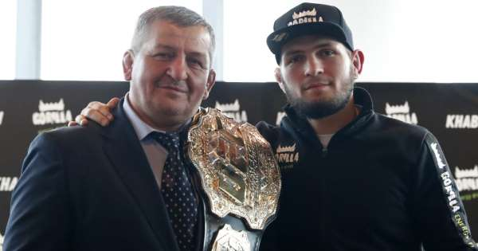

Tijdens zijn jeugd begon khabib met worstelen onder begeleiding van zijn vader, Abdoelmanap Noermagomedov. Zijn vader heeft een zwarte band in judo, is voormalig nationaal kampioen van Oekraïne in sambo en is nationaal gezien een voldongen meester in het worstelen